CAD Designing
What is CAD?
Computer-Aided Design (CAD) is a technology that allows users to digitally create 2D drawings and 3D models of real-world products. This powerful tool facilitates the design, simulation, and modification of prototypes before they are manufactured. CAD enables seamless collaboration among teams, leading to the development of innovative, high-quality products that can reach the market faster.
CAD Software/Tools
CAD software provides specialized tools tailored to different industries, such as architecture, industrial design, and electronics. Some CAD tools are versatile and can be used across a variety of fields, while others are industry-specific. Below is a list of widely used CAD tools:
- SolidWorks
- AutoCAD
- Fusion 360
- CATIA
- TinkerCad
- CREO
- Onshape
- SIEMENS NX
- LibreCAD
- DraftSight
- Solid Edge
- Altium Designer
Onshape: Cloud-Based CAD Software
Onshape is a cutting-edge, cloud-based CAD platform. It allows users to collaborate in real time on a single model through web-based servers, making it an ideal choice for industries involved in product design, machine parts, and industrial equipment.
Key Features of Onshape:
- Collaboration: Teams can work on the same design simultaneously, streamlining the design process.
- Document Organization: Instead of native file formats, Onshape stores design data within “Documents,” which act as project-level containers. These containers hold assemblies, parts, drawings, imported components, and other project-related data.
- Cross-Compatibility: Supports importing and exporting files in multiple industry-standard formats.
- Cloud-Based Access: Accessible through compatible web browsers after signing in.
Assembly Guide
Chassis Drawing (CAD Sketch)
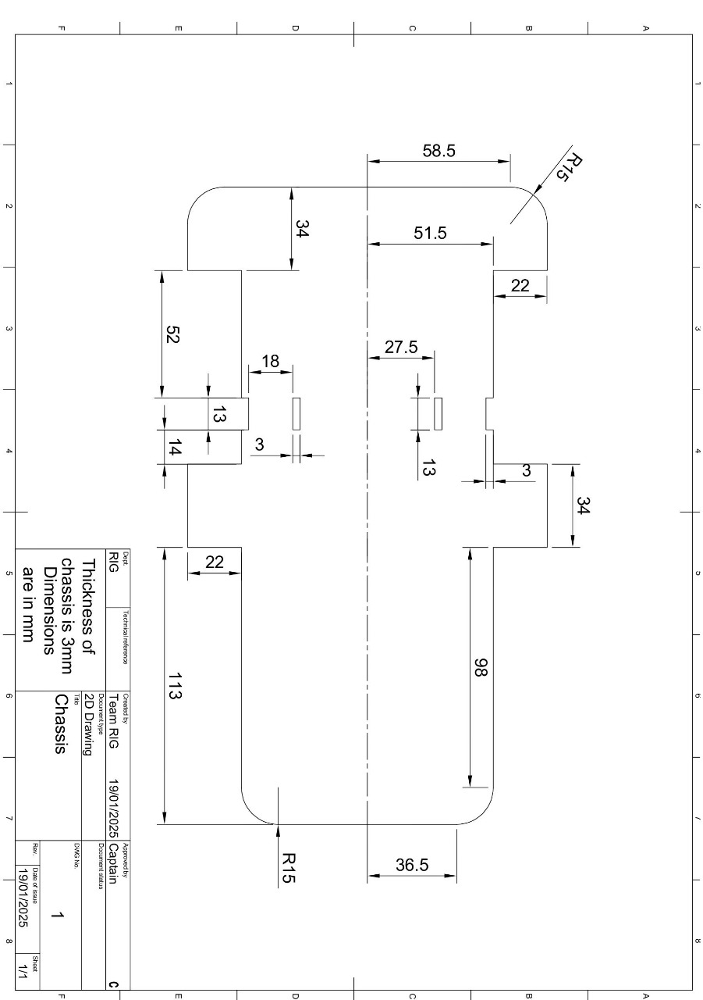
Step 1: Accessing the Assembly Tab
-
After partially creating the chassis, navigate to the Assembly tab located at the bottom of the screen by left-clicking on it.
- Note: The Assembly tab is automatically created when you start a new document.
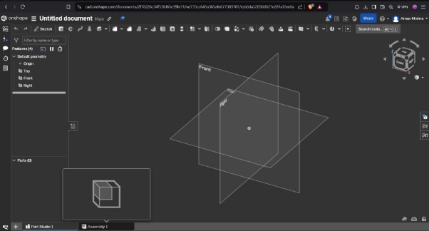
Step 2: Inserting an External Assembly
-
Left-click on Insert in the top panel.
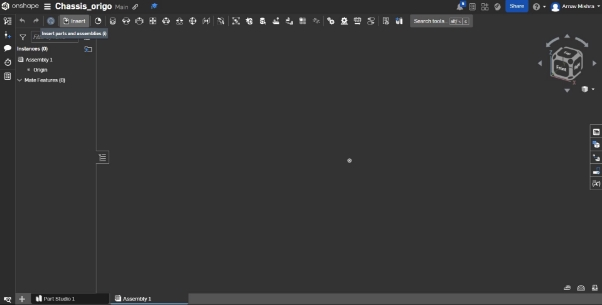 -
A drop-down menu will appear with the following options: Current Document, Other Documents, and Standard Document.
-
Navigate to Other Documents.
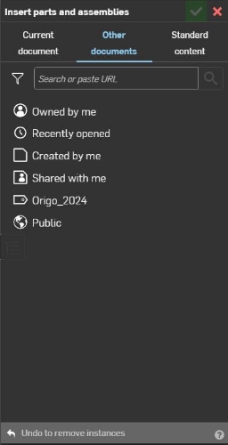 -
Paste the following URL into the provided box:
https://cad.onshape.com/documents/692cce191c77a3a06298e5dc/w/aafea05b38b3a608edf34070/e/839bcfdc334e62e3cf4d626eOR
- Go to Public and search for “Robot_assembly_origo24.”
- Select the appropriate item from the results.
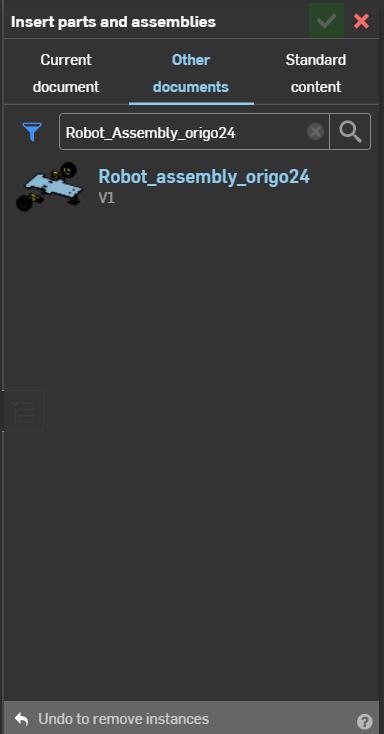
Step 3: Adding the Assembly
-
In the selected file, locate Part Studios and Assemblies.
- Note: Part Studios will be empty since the file is an assembly. Click on Assemblies.
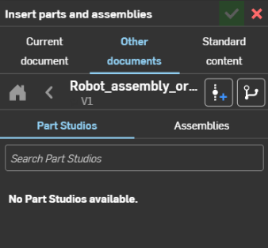
- Note: Part Studios will be empty since the file is an assembly. Click on Assemblies.
-
Select Assembly 1. Move your cursor to the workspace and left-click to place the assembly where desired.
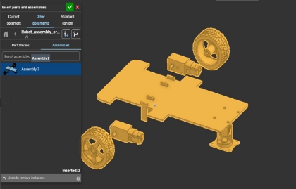 -
Click the green tick at the top to confirm placement.
Assembly Instructions
Motor Joints
-
Hover the cursor over the chassis without left-clicking. The chassis will display yellow borders.
-
Right-click and select Fix from the menu.
Note: If you accidentally left-clicked, press Esc to deselect. Fixing the chassis is crucial to visualize joints properly.
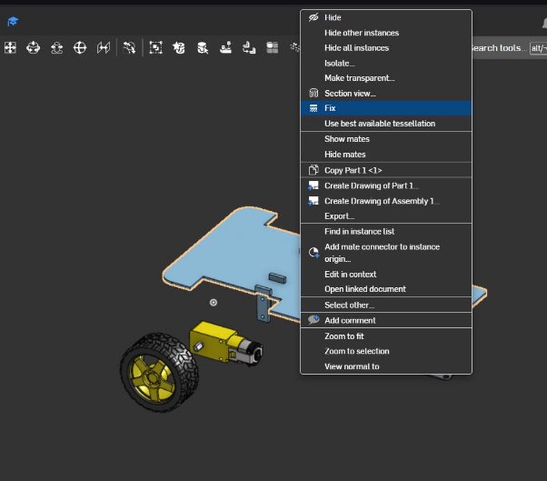
-
-
Select Fastened Mate from the toolbar.
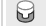 -
Click on the top hole of the motor’s surface. A Mate Connector will appear.
-
Rotate the view to locate the top hole on the T-shaped fastener. Click on it. The motor will align with the location.
-
Confirm by clicking the green tick.
Reference Video: Motor Joint Tutorial
-
Repeat the same process for the second motor joint.
Reference Video: Second Motor Joint
-
To exit the Fastened Mate tool, click the X or press Esc.
Castor Wheel Joint
-
Reorient the castor wheel:
- Left-click the wheel to activate a triad.
- Rotate the wheel along two axes to align its holes with the chassis.
Reference Video: Castor Wheel Alignment
- Left-click the wheel to activate a triad.
-
Create a joint between one hole on the castor wheel and one on the chassis using Fastened Mate (same technique as the motor joint).
Reference Video: Castor Wheel Joint
Revolute Joint
-
Select Revolute Mate from the toolbar. This mate requires two points of selection.
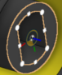 -
First, click the center of the tire. Ensure accuracy in selection to avoid misaligned orientations.
-
Next, select the center point from the three points available on the motor shaft’s inner surface.
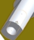 -
Click the green tick to confirm the joint.
Reference Video: Revolute Joint
-
Repeat this process for the second wheel.
Final Check
Verify that your project functions as intended by testing the joints:
Project Test
Completed Chassis (3D Model)
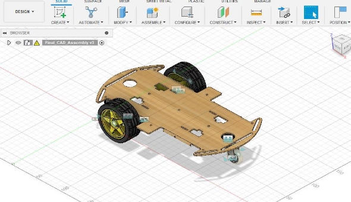